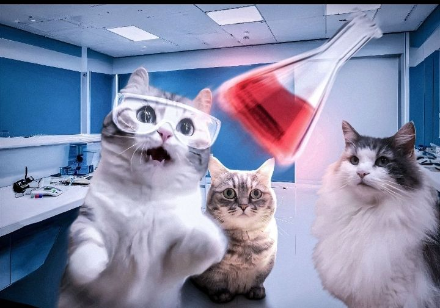

Seni Bioteknologi Dalam Segelas Wine
Jelajahi bagaimana mikroorganisme mengubah buah menjadi mahakarya melalui proses fermentasi yang presisi.


Jelajahi bagaimana mikroorganisme mengubah buah menjadi mahakarya melalui proses fermentasi yang presisi.
We are students from SMPN 47 Jakarta. This project is our final exploration into the world of biotechnology, combining science with digital innovation.
Memimpin strategi produk dan memastikan solusi yang berdampak bagi pengguna.
Merancang arsitektur sistem yang scalable dan memastikan kualitas kode.
Menggali data dan insight untuk mendukung pengambilan keputusan berbasis riset.
Menciptakan pengalaman visual yang intuitif dan selaras dengan identitas produk.
Mengawasi arah kreatif dan memastikan setiap karya mengomunikasikan nilai brand.
Mengembangkan dan menguji material untuk performa dan keberlanjutan produk.
"This shared avatar represents our unity as a team, working together as one."
One vision, one identity. We grow and build this project as a single team.

Secara sederhana, Wine adalah minuman beralkohol yang dibuat dari sari buah anggur yang telah melalui proses fermentasi. Tanpa tambahan gula buatan, ragi mengonsumsi gula alami dalam anggur dan mengubahnya menjadi etanol.
Ini adalah bukti nyata keajaiban biologi yang telah dipraktikkan manusia sejak ribuan tahun lalu.
| Aspek | Konvensional | Modern |
|---|---|---|
| Teknik | Fermentasi alami. | Rekayasa genetika. |
| Alat | Tradisional & manual. | Peralatan Lab canggih. |
| Skala | Kecil/Rumahan. | Industri presisi. |

Konsep dasar pemanfaatan makhluk hidup.

Simulasi suhu dan rumus kimia alkohol.

Peran jamur mikroskopis dalam wine.

Tahapan pembuatan dari hulu ke hilir.